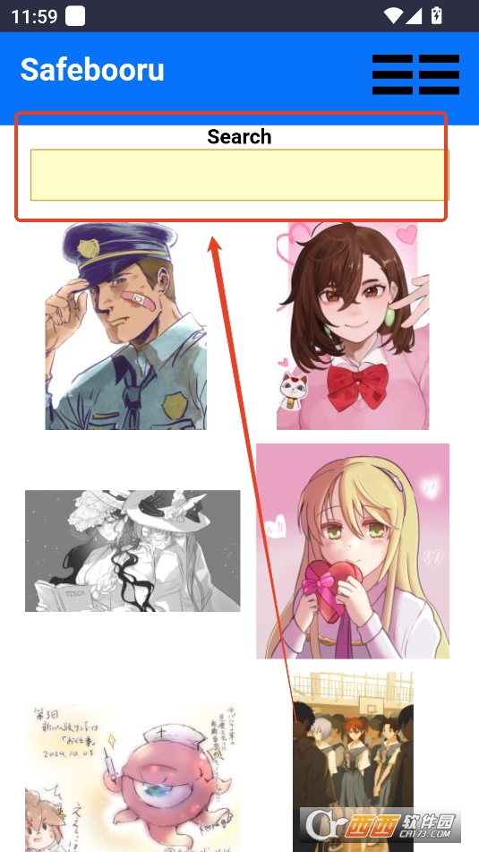

Safebooru 入门：五分钟从安装到搜到第一张心动的插画
第一次用 Safebooru 找高清插画和壁纸？这篇手把手带你从下载安装到跑通第一次搜索，再告诉你新手最该先碰的三个功能和三个最常踩的坑。
这篇能带你从完全不懂 Safebooru 到用起来——不需要任何基础，跟着点就行。
它到底是干嘛的？一个生活化类比
你有没有过这种时刻：刷到一张超好看的插画壁纸，想找来当桌面，但搜遍 Pinterest、堆糖、百度都找不到高清原图，要么被压缩糊了，要么加了别人的水印。
Safebooru 解决的就是这个痛点。它的safebooru官网上有完整的功能介绍和版本更新记录。它是一个 Android 上的 booru 客户端——booru 是日本那边的一类图片社区网站，主打插画、二次元、同人图，每张图都被社区用户打了很细的标签。Safebooru 把这些海外图站的内容搬到你手机上，让你用标签精确搜索，下载原始上传文件——不会压缩、不会加水印，画质跟画师上传时一模一样。
简单说：Safebooru 就是一个专门找高清无码插画的搜索引擎，背后连的是海外 booru 图站的数据库。
五分钟上手：从安装到第一次跑通
最短路径三步走，跟着做：
第一步：下载安装。去它的官网下载安装包，传到手机上装。Android 可能会提示「未知来源」，去设置里允许一下就行。
第二步：开存储权限。装完第一次打开时，app 会弹出请求——要点「允许」。没开的话后面点下载按钮会没反应，这是新手最常踩的第一个坑。如果第一次忘了，也可以随时去「设置 → 应用管理 → Safebooru → 权限」里手动打开。
第三步：打开首页，随便点一张图。首页铺满了缩略图，点任意一张进大图页——下面有个向下箭头图标，那就是下载按钮。点一下直接开始存，不需要确认弹窗，图会落到手机内部存储的 Pictures 目录下。
到这里你已经跑通了完整流程。
上手后先玩这三个功能
基础跑通了，接下来三个功能是 Safebooru 的精华，也是新手最值得先花点时间摸清的：
标签搜索——精确找到你想要的任何风格
这是 Safebooru 最强的功能。首页顶栏中间就是搜索框，点一下弹键盘，输入标签回车就行。
核心只有两条规则：
- 标签之间用空格——
blue_eyes long_hair表示同时要蓝眼和长发的图，缺一个都不出来。 - 标签内多词用下划线连——
school_uniform是一个标签（校服），不是 school 和 uniform 两个。如果你写成空格分隔，booru 会理解成「同时找带 school 标签和带 uniform 标签的图」，结果大概率驴唇不对马嘴。

Safebooru 对接的 booru 站标签都是英文的，不过这不是问题——在首页随便点一张感兴趣的图，进入详情页就能看到它的全部标签列表，直接抄就行。
一般控制在 3~8 个标签效果最好。太少结果太多，多到翻不完；太精确（10 个以上）可能一张都搜不到。搜不到的时候从最宽的标签（比如 1girl）开始，逐个加标签缩小范围。
分级筛选——在什么场合看什么内容
booru 站内容很杂，从完全无害的风景插画到敏感向都有。社区给每张图投票打了分级，Safebooru 开箱即用就是相对安全模式：
- G（General）：零敏感，公共场所放心开
- S（Sensitive）：轻微暗示，整体安全
- Q（Questionable）：争议性，默认不显示
- E（Explicit）：明确成人向，默认不显示
默认首页和搜索只给 G 和 S。想看更宽的范围可以去设置里调「默认过滤级别」，或者搜索时显式加 rating:questionable。
分级只解决「什么场合合适看」的问题，不代表画得好不好。一张 Q 级别的图可能画得非常棒，只是题材敏感。
黑名单——一次配置，终身干净
黑名单是 Safebooru 最强的内容净化武器。你把不想看的标签写进去之后，所有搜索结果自动排除，不需要每次手动加排除。
进入方式：右上角三条横线 → 设置 → 找到「黑名单」。界面很简单，一个文本框，每行写一个标签。
推荐起步配置：
rating:explicit
rating:questionable
furry
mecha按自己口味再加——不喜欢校服就加 school_uniform，不喜欢泳衣就加 swimsuit，只看少女就加 1boy。
黑名单是本地后处理，booru 站不知道你配了什么。被隐藏的图的数量会在侧边栏显示一个小数字，告诉你「这次搜索原本有 X 张，其中 Y 张被你的黑名单藏了」。更复杂的条件过滤规则可以去safebooru文档里慢慢翻。
小白的三个常见疑问
下载慢或下载失败？
booru 站服务器在日本或海外，国内访问速度不稳定是正常的。下载慢的话连个 VPN 或加速器再下，Wi-Fi 环境下最快。下载失败先查存储权限（最常见原因），再看网络断没断，booru 站偶尔会过载，等几分钟再试。
标签搜不到结果怎么办？
从最宽的搜索开始，逐个加标签缩小范围。比如先搜 1girl（结果最多），加 blue_hair（缩小到蓝发少女），再加 school_uniform（再缩小）……加到刚好你想要的精度为止。一下子塞 10 个标签大概率一张都搜不到。
为什么有些图我朋友能看到我看不到？
大概率是两个原因：默认分级过滤了 Q 和 E 级别，或者黑名单里写了对应的标签。去设置里看看「默认过滤级别」设的是什么，再检查黑名单列表，删掉你不介意的标签就行。
Safebooru 虽然功能不算多，但标签搜索这套体系摸熟了之后找图效率会特别高。刚开始可以先从首页翻翻，看到喜欢的图就点进去抄它的标签，慢慢你就会有自己常用的标签组合。进阶的话可以去看看分级筛选的更多玩法，让搜索结果越来越贴合你的审美。
Safebooru 的资料在三个主流仓库都能找到：主仓库放在GitHub，国内访问更快的镜像分别是Gitee和GitCode，各有各的网络优势。